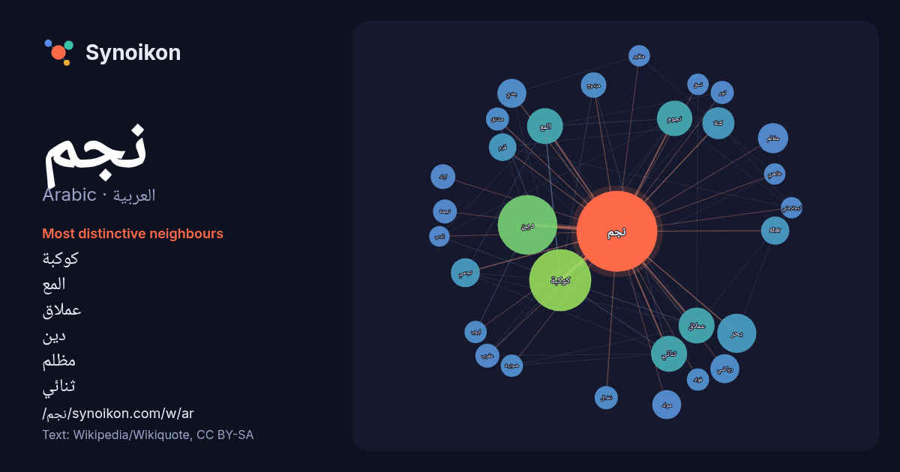

العربية · Arabic · word of the day list
نجم
“star” · The words found around it in 1014 instances from Arabic Wikipedia, Wikiquote.

Most distinctive neighbours
- كوكبة 78×
- المع 34×
- عملاق 31×
- دين 28×
- مظلم 24×
- ثنائي 22×
- جدي 22×
- star 21×
- نجمي 21×
- نجوم 21×
- مولد 20×
- قزم 20×
- كتلة 16×
- عقرب 15×
- مزدوج 15×
- رياضي 14×
- نجمة 14×
- ثور 14×
- نضال 13×
- مشتق 13×
× = how many times more often than in general Arabic Wikipedia text.
Most frequent neighbours
- كوكبة 101
- دين 93
- بحر 40
- اسم 39
- محمد 37
- المع 34
- ثنائي 34
- عملاق 34
- نجوم 33
- احمد 29
- عربي 29
- كتلة 27
- شمال 26
- عبد 26
- ابو 25
- فيلم 24
- مظلم 24
- جدي 22
- رياضي 22
- مولد 22
In context
- النجم هو جرم فلكي كُرَوَانِيّ من البلازما ضخم ولامع ومتماسك بفعل الجاذبية. يستمد النجم لمعانه من الطاقة النووية المتولدة فيه، حيث تلتحم ذرات الهيدروجين Wikipedia snippets · نجم
- اللاتيني كانوبوس (اللاتينية: Canopus)، وهو ألمع نجم في مجموعة النجوم المكونة لكوكبة الجؤجؤ، وثاني ألمع نجم في السماء ليلًا بعد الشعرى اليمانية، ويأتي بعده Wikipedia snippets · سهيل (نجم)
- نوارة الانتصار أحمد فؤاد عزت نجم (8 أكتوبر 1973 -)، مدونة وناشطة وصحفية مصرية مهتمة بالعمل العام وحقوق الإنسان. تعمل محررة أخبار ومترجمة بقناة النيل للمعلومات Wikipedia snippets · نوارة نجم
- وائل نجم (26 مايو 1973 –)، ممثل أردني من عائلة فنية، وهو الأخ التوأم للممثل نضال نجم. بدأ مشواره الفني في التمثيل والإخراج المسرحي، وانتقل بعدها إلى العمل Wikipedia snippets · وائل نجم
- نجم مظلم. إذا وصلت لهذه الصفحة عبر وصلة داخليّة، فضلا غيّر تلك الوصلة لتقود مباشرة إلى المقالة المعنيّة. قد يقصد من «نجم مظلم» : نجم مظلم (فيلم) نجم مظلم Wikipedia snippets · نجم مظلم (توضيح)
- Minoris) هو ألمع نجوم كوكبة الدب الأصغر ونجم الشمال الحالي، حيث أنه قريب جداً من القطب السماوي الشمالي. الجدي هو نجم متعدد (ثلاثي) ويبعد عن الأرض مسافة 430 Wikipedia snippets · الجدي (نجم)
- الفلك (الإنجليزية: Astronomy) وهي مكونة من مقطعين، البادئة Astro- وتعني نجم أو سماء أو فلكي واللاحقة onomy- التي تعني مجموعة القواعد أو القوانين الناظمة Wikipedia snippets · علم الفلك
- نضال نجم (26 مايو 1973 –)، ممثل أردني. تخرج من المعهد العالي للفنون المسرحية بدمشق وهو الأخ التوأم للممثل وائل نجم. عمل في عدد من المسلسلات التليفزيونية Wikipedia snippets · نضال نجم
More Arabic words
- أغنية
- إله
- تاريخ
- جبل
- جرس
- جزيرة
- جسر
- حديقة
- حصان
- حقيقة
- حياة
- خبز
- خريطة
- خريف
- ذهب
- زمن
- ساعة
- شاي
- شتاء
- صحة
- صحراء
- صمت
- صيف
- طبيعة
- طريق
- طعام
- ظل
- عائلة
- عاصفة
- عسل
- علم
- عمل
- غابة
- فن
- قطار
- قطة
- قلب
- قوة
- كلب
- لغة
- ماء
- مال
- مدينة
- مرآة
- مطر
- ملح
- مناخ
- موت
- والدة
Precomputed on 2026-10-09 with default settings (±5 words, medium corpus). The interactive map can refresh it with live data.